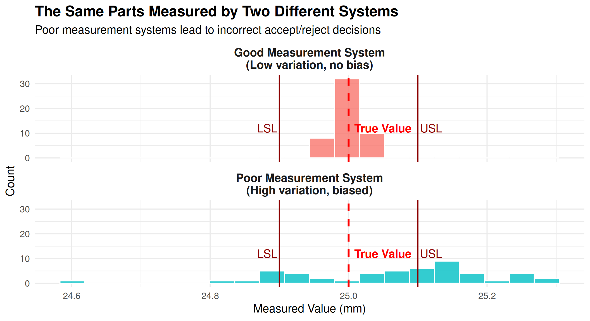
11 Measurement Systems Analysis
11.1 Learning Objectives
After completing this chapter, you will be able to:
- Explain the importance of measurement system quality in process control
- Identify the components of measurement system variation
- Define and calculate accuracy, bias, linearity, stability, repeatability, and reproducibility
- Conduct and interpret a Gauge R&R study using both the Range and ANOVA methods
- Determine measurement system acceptability using %GRR and ndc criteria
- Apply attribute measurement system analysis for pass/fail decisions
- Recognize common sources of measurement error and implement improvements
- Understand the relationship between MSA and SPC effectiveness
11.2 Introduction to Measurement Systems Analysis
Measurement Systems Analysis (MSA) is the science of evaluating the quality of measurement processes. Before we can trust our data for process control, quality decisions, or capability studies, we must first verify that our measurement system is capable of providing reliable results.
11.2.1 Why MSA Matters
“You can’t improve what you can’t measure - but you also can’t improve what you measure incorrectly.”
Consider this scenario:
11.2.2 The Cost of Poor Measurement
| Impact | Description | Consequence |
|---|---|---|
| False Accepts (Type II Error) | Bad parts passed as good; reach customer | Warranty claims, recalls, reputation damage |
| False Rejects (Type I Error) | Good parts rejected as bad; scrapped or reworked | Increased scrap costs, reduced yield |
| Process Adjustment Errors | Adjusting process based on measurement noise, not real changes | Over-adjustment increases variation (tampering) |
| Capability Misassessment | Cp/Cpk calculations are wrong; true capability unknown | False confidence or unnecessary investment |
| Customer Complaints | Inconsistent quality due to measurement-based decisions | Loss of customer trust and business |
11.2.3 MSA in Industry Standards
MSA is required by multiple quality standards:
- IATF 16949 (Automotive): Requires MSA for all measurement systems referenced in control plans
- AS9100 (Aerospace): Requires demonstrated measurement capability
- ISO 9001: Requires monitoring and measurement resources to be suitable
- FDA 21 CFR Part 820 (Medical Devices): Requires validated measurement equipment
11.3 Components of Measurement Variation
Total measurement variation comes from multiple sources. Understanding these components is essential for improvement.
11.3.1 The Measurement System Model
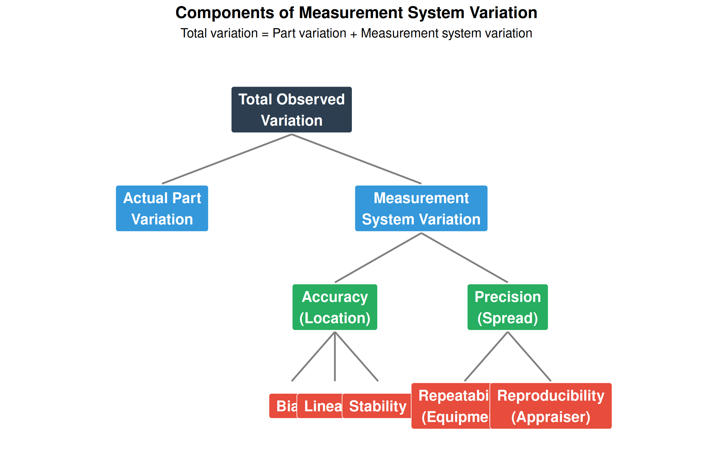
11.3.2 Accuracy vs. Precision
These are often confused but are fundamentally different concepts:
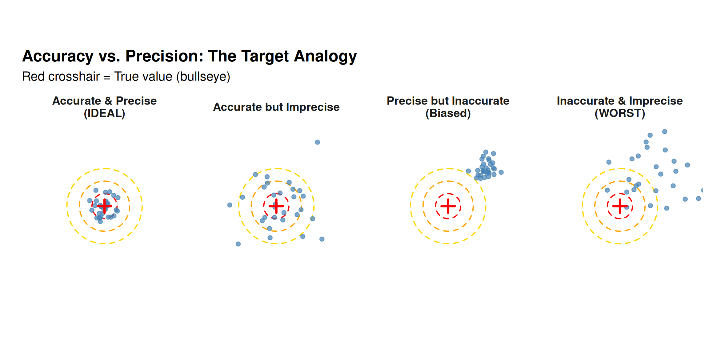
| Definition | Affected By | Correctable? | Primary Metric | |
|---|---|---|---|---|
| Accuracy | How close measurements are to the true value (average) | Calibration, bias, linearity | Yes - through calibration and adjustment | Bias (average error from reference) |
| Precision | How close measurements are to each other (spread) | Repeatability, reproducibility, resolution | Harder - often requires equipment upgrade | Standard deviation of repeated measurements |
11.4 Accuracy Studies
Accuracy studies evaluate how well the measurement system indicates the true value.
11.4.1 Bias
Bias is the systematic error - the difference between the average of measurements and the true (reference) value.
\[\text{Bias} = \bar{x}_{observed} - x_{reference}\]
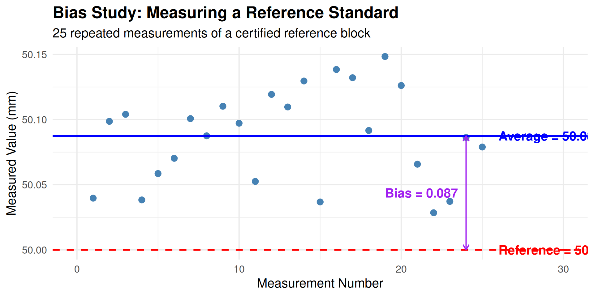
This worked example is fixed as a reference — read through it once, then try the editable examples further on in this chapter for yourself.
# Bias study calculation
reference_value <- 50.000 # Certified reference standard
measurements <- c(50.08, 50.07, 50.09, 50.08, 50.06, 50.10, 50.07, 50.08,
50.09, 50.08, 50.07, 50.11, 50.08, 50.09, 50.07)
# Calculate bias
average_measured <- mean(measurements)
bias <- average_measured - reference_value
cat("Reference Value:", reference_value, "mm\n")
cat("Average Measured:", round(average_measured, 4), "mm\n")
cat("Bias:", round(bias, 4), "mm\n")
cat("Bias as % of Tolerance (±0.10):", round(abs(bias) / 0.10 * 100, 1), "%\n")
# Statistical test for significance
t_test <- t.test(measurements, mu = reference_value)
cat("\nt-test p-value:", round(t_test$p.value, 4))
if(t_test$p.value < 0.05) {
cat(" - Bias is statistically significant\n")
} else {
cat(" - Bias is not statistically significant\n")
}Reference Value: 50 mm
Average Measured: 50.0813 mm
Bias: 0.0813 mm
Bias as % of Tolerance (±0.10): 81.3 %
t-test p-value: 0 - Bias is statistically significant11.4.2 Linearity
Linearity measures whether bias changes across the measurement range. A gauge might be accurate at one end of its range but biased at the other.
`geom_smooth()` using formula = 'y ~ x'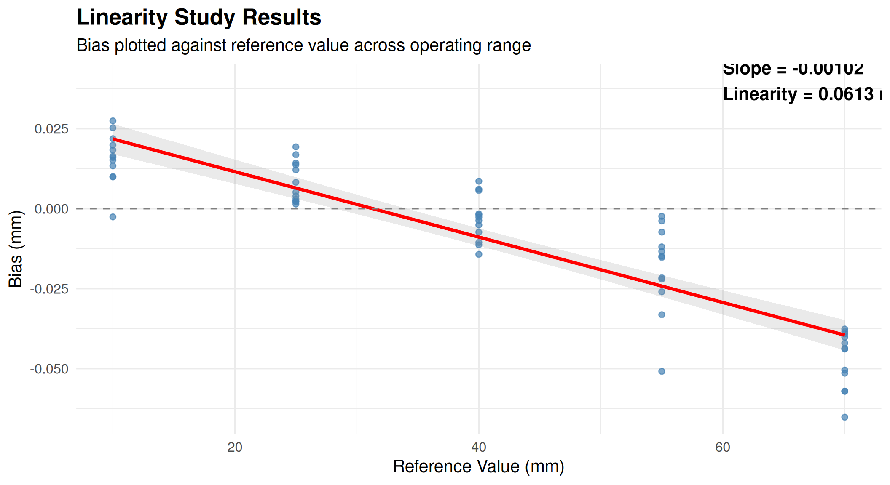
Live cell — try a different set of reference points and biases.
11.4.3 Stability
Stability (also called drift) measures whether the measurement system’s accuracy changes over time.
`geom_smooth()` using formula = 'y ~ x'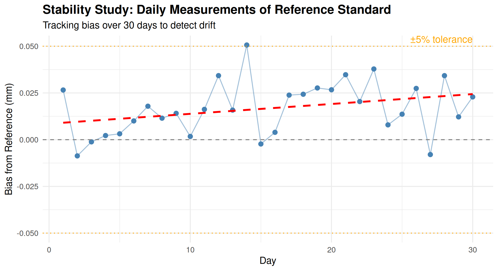
11.4.4 Stability Control Chart
For ongoing stability monitoring, use a control chart. Live cell — try different measurements or a different historical sigma.
11.5 Precision Studies: Gauge R&R
Gauge R&R (Repeatability and Reproducibility) is the most common MSA study. It quantifies precision variation.
11.5.1 Repeatability vs. Reproducibility
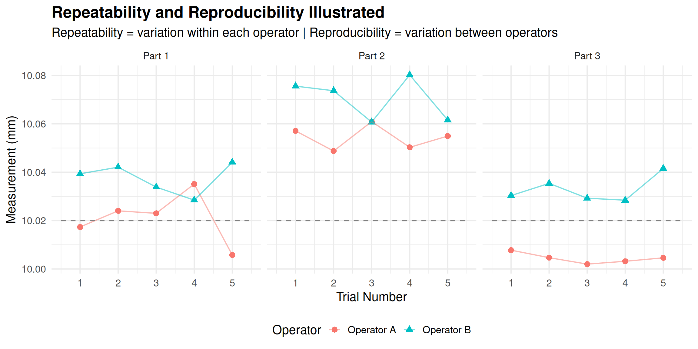
| Component | Also Known As | Definition | Caused By |
|---|---|---|---|
| Repeatability (EV) | Equipment Variation, Within-operator variation | Variation when same operator measures same part multiple times with same gauge | Gauge resolution, gauge condition, fixture, technique consistency |
| Reproducibility (AV) | Appraiser Variation, Between-operator variation | Variation when different operators measure the same parts | Training differences, technique differences, interpretation |
| Gauge R&R (GRR) | Total measurement system variation | Combined repeatability and reproducibility | All measurement system sources combined |
11.5.2 Gauge R&R Study Design
| Parameter | Typical_Value | Notes |
|---|---|---|
| Number of Parts | 10 | Minimum 5, 10 recommended for statistical power |
| Number of Operators | 3 | Minimum 2, 3 is standard for detecting operator effects |
| Number of Trials | 3 | Minimum 2, 3 is standard for repeatability estimation |
| Total Measurements | 10 × 3 × 3 = 90 | More measurements = better precision in estimates |
| Part Selection | Cover the full process range | Parts should represent typical production variation |
| Randomization | Randomize measurement order | Blind measurements when possible; prevents bias |
11.5.3 Range Method (Short Form)
The Range Method is a quick approximation useful for initial screening.
Live cell — try different measurement data for the two operators.
11.5.4 ANOVA Method (Full Study)
ANOVA (Analysis of Variance) is a statistical technique that partitions the total observed variation in a dataset into distinct components, each attributable to a specific source. In the context of Gauge R&R, ANOVA separates the total measurement variation into contributions from:
- Parts (the actual differences between items being measured)
- Operators (systematic differences between people taking measurements)
- Part × Operator interaction (whether certain operators measure certain parts differently)
- Repeatability (random error when the same operator measures the same part multiple times)
11.5.4.1 Why Use ANOVA for Gauge R&R?
The fundamental question in any measurement system analysis is: “How much of the variation I observe comes from my measurement system versus the actual differences between parts?” ANOVA answers this question by statistically decomposing variance—it calculates how much each source contributes to what we observe.
Consider the alternative: if we simply looked at the spread of all measurements, we wouldn’t know whether a wide spread indicates highly variable parts (good—our gauge can detect differences) or a poor measurement system (bad—we’re adding noise). ANOVA untangles these effects mathematically.
11.5.4.2 Why ANOVA is the Preferred Method
While the Range Method provides a quick estimate, ANOVA offers several critical advantages for Gauge R&R studies:
| Aspect | Range Method | ANOVA Method |
|---|---|---|
| Interaction effects | Cannot detect | Identifies Part × Operator interactions |
| Statistical rigor | Approximation using range-based estimates | Exact variance component estimation |
| Hypothesis testing | Not available | Provides F-tests and p-values for each source |
| Accuracy | Tends to overestimate GRR | More precise variance estimates |
| Information richness | Basic EV/AV breakdown | Full decomposition with confidence intervals |
| Industry acceptance | Screening only | Required for formal MSA studies (AIAG) |
The ability to detect interaction effects is particularly important. If Operator A consistently measures Part 3 higher than Operator B does (but they agree on other parts), this indicates a training issue or technique difference that the Range Method would miss entirely. ANOVA flags this interaction, enabling targeted corrective action.
11.5.4.3 How ANOVA Works in Gauge R&R
ANOVA uses the F-statistic to test whether variation between groups (e.g., between operators) is significantly larger than variation within groups (repeatability). The mathematical basis is:
\[F = \frac{\text{Mean Square Between Groups}}{\text{Mean Square Within Groups}} = \frac{MS_{factor}}{MS_{error}}\]
A large F-value indicates that the factor (Part, Operator, or their interaction) contributes meaningfully to the observed variation. The p-value tells us the probability of seeing such an F-value if the factor had no real effect.
From the ANOVA table’s Mean Squares, we extract variance components (\(\sigma^2\)) for each source, then combine them to calculate the standard metrics: %EV (repeatability), %AV (reproducibility), %GRR, and the number of distinct categories (ndc).
# Full Gauge R&R using ANOVA method
# 10 parts, 3 operators, 3 trials
set.seed(42)
# Generate realistic GRR data
n_parts <- 10
n_operators <- 3
n_trials <- 3
# Part true values (most of the variation)
part_effects <- rnorm(n_parts, 0, 0.05)
# Operator effects (some variation)
operator_effects <- c(-0.008, 0.003, 0.005)
# Create dataset
grr_data <- expand.grid(
Part = 1:n_parts,
Operator = paste0("Op", 1:n_operators),
Trial = 1:n_trials
)
# Add measurements
grr_data$Measurement <- 10 +
part_effects[grr_data$Part] +
operator_effects[as.numeric(factor(grr_data$Operator))] +
rnorm(nrow(grr_data), 0, 0.006) # Repeatability error
# Convert to factors
grr_data$Part <- factor(grr_data$Part)
grr_data$Operator <- factor(grr_data$Operator)
# Fit ANOVA model
anova_model <- aov(Measurement ~ Part + Operator + Part:Operator, data = grr_data)
# Extract variance components
anova_table <- anova(anova_model)
print(anova_table)Analysis of Variance Table
Response: Measurement
Df Sum Sq Mean Sq F value Pr(>F)
Part 9 0.136635 0.0151816 343.6163 < 2.2e-16 ***
Operator 2 0.003430 0.0017152 38.8223 1.52e-11 ***
Part:Operator 18 0.000430 0.0000239 0.5401 0.9263
Residuals 60 0.002651 0.0000442
---
Signif. codes: 0 '***' 0.001 '**' 0.01 '*' 0.05 '.' 0.1 ' ' 1# Extract Mean Squares from ANOVA
MS_part <- anova_table["Part", "Mean Sq"]
MS_operator <- anova_table["Operator", "Mean Sq"]
MS_interaction <- anova_table["Part:Operator", "Mean Sq"]
MS_error <- anova_table["Residuals", "Mean Sq"]
# Calculate variance components
n_p <- 10 # number of parts
n_o <- 3 # number of operators
n_r <- 3 # number of trials
# Repeatability variance
var_repeatability <- MS_error
# Interaction variance
var_interaction <- max(0, (MS_interaction - MS_error) / n_r)
# Operator variance
var_operator <- max(0, (MS_operator - MS_interaction) / (n_p * n_r))
# Part variance
var_part <- max(0, (MS_part - MS_interaction) / (n_o * n_r))
# Reproducibility = Operator + Interaction
var_reproducibility <- var_operator + var_interaction
# Total Gauge R&R
var_GRR <- var_repeatability + var_reproducibility
# Total variation
var_total <- var_part + var_GRR
# Convert to standard deviations
sigma_repeatability <- sqrt(var_repeatability)
sigma_reproducibility <- sqrt(var_reproducibility)
sigma_GRR <- sqrt(var_GRR)
sigma_part <- sqrt(var_part)
sigma_total <- sqrt(var_total)
# Calculate study variation (5.15 sigma for 99% of distribution)
SV_repeatability <- 5.15 * sigma_repeatability
SV_reproducibility <- 5.15 * sigma_reproducibility
SV_GRR <- 5.15 * sigma_GRR
SV_part <- 5.15 * sigma_part
SV_total <- 5.15 * sigma_total
cat("\n=== ANOVA Gauge R&R Results ===\n\n")
cat("Variance Components:\n")
cat(" Repeatability:", round(var_repeatability, 8), "\n")
cat(" Reproducibility:", round(var_reproducibility, 8), "\n")
cat(" Part-to-Part:", round(var_part, 8), "\n")
cat(" Total:", round(var_total, 8), "\n")
cat("\nStudy Variation (5.15σ):\n")
cat(" Repeatability:", round(SV_repeatability, 5), "\n")
cat(" Reproducibility:", round(SV_reproducibility, 5), "\n")
cat(" Gauge R&R:", round(SV_GRR, 5), "\n")
cat(" Part-to-Part:", round(SV_part, 5), "\n")
cat(" Total:", round(SV_total, 5), "\n")
=== ANOVA Gauge R&R Results ===
Variance Components:
Repeatability: 4.418e-05
Reproducibility: 5.638e-05
Part-to-Part: 0.0016842
Total: 0.00178476
Study Variation (5.15σ):
Repeatability: 0.03423
Reproducibility: 0.03867
Gauge R&R: 0.05164
Part-to-Part: 0.21135
Total: 0.21757 11.5.5 Calculating %GRR and Acceptance Criteria
# Calculate %GRR using both methods
tolerance <- 0.30 # Total tolerance
# Method 1: % of Tolerance (%GRR_Tolerance)
pct_GRR_tol <- (SV_GRR / tolerance) * 100
# Method 2: % of Total Variation (%GRR_TV)
pct_GRR_tv <- (sigma_GRR / sigma_total) * 100
# Number of Distinct Categories (ndc)
ndc <- 1.41 * (sigma_part / sigma_GRR)
cat("=== Gauge R&R Acceptance Criteria ===\n\n")
cat("%GRR (of Tolerance):", round(pct_GRR_tol, 1), "%\n")
cat("%GRR (of Total Variation):", round(pct_GRR_tv, 1), "%\n")
cat("Number of Distinct Categories (ndc):", round(ndc, 1), "\n\n")
# Acceptance criteria
cat("AIAG Acceptance Guidelines:\n")
cat("─────────────────────────────────────\n")
if(pct_GRR_tol < 10) {
cat("%GRR < 10%: ACCEPTABLE - Measurement system is acceptable\n")
} else if(pct_GRR_tol < 30) {
cat("%GRR 10-30%: MARGINAL - May be acceptable based on application\n")
} else {
cat("%GRR > 30%: UNACCEPTABLE - Measurement system needs improvement\n")
}
if(ndc >= 5) {
cat("ndc ≥ 5: ACCEPTABLE - Adequate discrimination\n")
} else if(ndc >= 2) {
cat("ndc 2-4: MARGINAL - Limited discrimination ability\n")
} else {
cat("ndc < 2: UNACCEPTABLE - Cannot distinguish between parts\n")
}=== Gauge R&R Acceptance Criteria ===
%GRR (of Tolerance): 17.2 %
%GRR (of Total Variation): 23.7 %
Number of Distinct Categories (ndc): 5.8
AIAG Acceptance Guidelines:
─────────────────────────────────────
%GRR 10-30%: MARGINAL - May be acceptable based on application
ndc ≥ 5: ACCEPTABLE - Adequate discrimination11.5.6 Gauge R&R Acceptance Criteria Summary
| Criterion | Status | Interpretation |
|---|---|---|
| %GRR < 10% | Acceptable | Measurement system is acceptable for process control and capability |
| %GRR 10-30% | Marginal | May be acceptable depending on importance, cost of gauge, repair costs |
| %GRR > 30% | Unacceptable | Measurement system is not acceptable; action required |
| ndc ≥ 5 | Acceptable | Gauge can adequately distinguish between parts |
| ndc = 2-4 | Marginal | Limited ability to distinguish; may be OK for simple pass/fail |
| ndc < 2 | Unacceptable | Gauge cannot distinguish between parts; almost useless for control |
11.5.7 Visual Analysis of Gauge R&R
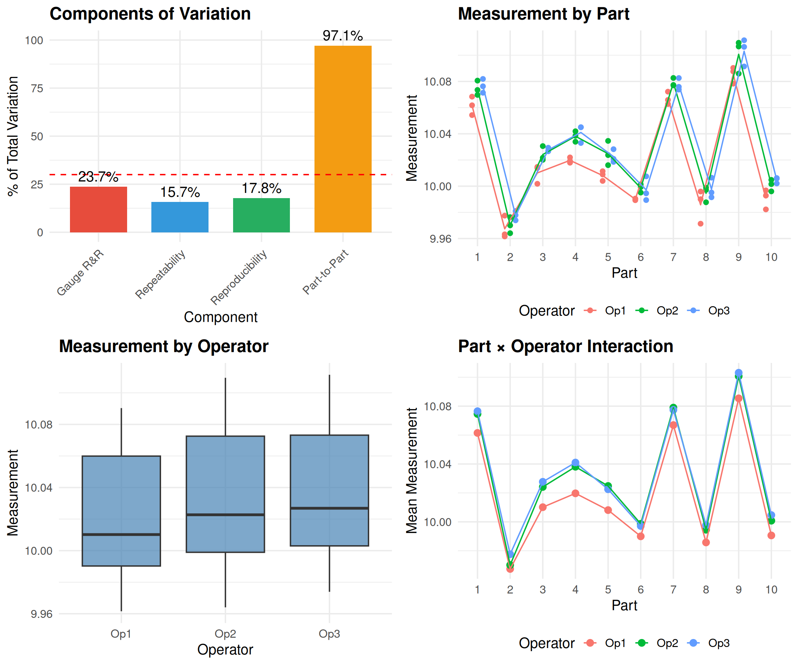
11.6 Attribute Measurement Systems
For pass/fail or categorical measurements (visual inspection, go/no-go gauges), we use Attribute MSA or Attribute Agreement Analysis.
11.6.1 Kappa Statistic
When evaluating attribute measurement systems (pass/fail, accept/reject, visual inspection), you might think that percent agreement would be sufficient—if two inspectors agree 90% of the time, isn’t that good enough? The problem is that some agreement happens purely by chance, and percent agreement doesn’t account for this.
11.6.1.1 Why Percent Agreement Can Be Misleading
Consider a visual inspection where 95% of parts are good. If an inspector simply guesses “Accept” for every part (without even looking), they would be “correct” 95% of the time. Two such inspectors would agree 90.5% of the time by pure chance:
\[P_e = P(\text{both say Accept}) + P(\text{both say Reject}) = 0.95^2 + 0.05^2 = 0.905\]
This is why we need Cohen’s Kappa (\(\kappa\))—it measures agreement beyond what we’d expect from chance alone.
11.6.1.2 The Kappa Formula
\[\kappa = \frac{P_o - P_e}{1 - P_e}\]
Where:
- \(P_o\) = Observed proportion of agreement (how often they actually agree)
- \(P_e\) = Expected proportion of agreement by chance (how often they’d agree if guessing randomly based on their individual tendencies)
- \(1 - P_e\) = Maximum possible agreement beyond chance
Interpreting the formula: The numerator (\(P_o - P_e\)) represents actual agreement minus chance agreement—the “real” agreement attributable to consistent measurement. The denominator (\(1 - P_e\)) normalizes this to a 0–1 scale by dividing by the maximum possible improvement over chance.
| Kappa Value | Meaning |
|---|---|
| \(\kappa = 1\) | Perfect agreement (everyone agrees, and not by chance) |
| \(\kappa = 0\) | Agreement equals chance—no better than random guessing |
| \(\kappa < 0\) | Agreement is worse than chance (systematic disagreement) |
11.6.1.3 When to Use Kappa
Use Kappa when evaluating:
- Inspector vs. Reference: Does the operator match the known correct answer? (Most important for MSA)
- Inspector vs. Inspector: Do two operators classify the same parts the same way?
- Inspector vs. Self (Repeatability): Does the same operator give the same answer when re-inspecting the same part?
For a robust attribute MSA, you should calculate Kappa for all three comparisons. High agreement with other operators but low agreement with the reference standard indicates consistent but incorrect inspection—a training problem.
| Kappa | Interpretation | Action |
|---|---|---|
| < 0 | Less than chance agreement | Major issues - do not use |
| 0.00 - 0.20 | Slight agreement | Major improvement needed |
| 0.21 - 0.40 | Fair agreement | Significant improvement needed |
| 0.41 - 0.60 | Moderate agreement | Some improvement needed |
| 0.61 - 0.80 | Substantial agreement | Acceptable for most applications |
| 0.81 - 1.00 | Almost perfect agreement | Excellent - acceptable |
11.6.2 Attribute Agreement Study Example
# Attribute Agreement Analysis
# 3 operators inspect 30 samples, 2 trials each
# Reference standard (known good/bad) available
set.seed(123)
n_samples <- 30
n_operators <- 3
n_trials <- 2
# Reference classification (10 bad, 20 good)
reference <- c(rep("Reject", 10), rep("Accept", 20))
# Simulate operator decisions (some disagreement)
simulate_decision <- function(ref, accuracy) {
sapply(ref, function(r) {
if(runif(1) < accuracy) r else ifelse(r == "Accept", "Reject", "Accept")
})
}
# Operators with different accuracy levels
op1_t1 <- simulate_decision(reference, 0.92)
op1_t2 <- simulate_decision(reference, 0.92)
op2_t1 <- simulate_decision(reference, 0.88)
op2_t2 <- simulate_decision(reference, 0.88)
op3_t1 <- simulate_decision(reference, 0.95)
op3_t2 <- simulate_decision(reference, 0.95)
# Calculate agreement metrics
# 1. Within-operator agreement (repeatability)
within_op1 <- mean(op1_t1 == op1_t2)
within_op2 <- mean(op2_t1 == op2_t2)
within_op3 <- mean(op3_t1 == op3_t2)
# 2. Each operator vs. reference
op1_vs_ref <- mean(op1_t1 == reference & op1_t2 == reference)
op2_vs_ref <- mean(op2_t1 == reference & op2_t2 == reference)
op3_vs_ref <- mean(op3_t1 == reference & op3_t2 == reference)
# 3. All operators agree (both trials)
all_agree_t1 <- mean(op1_t1 == op2_t1 & op2_t1 == op3_t1)
all_agree_both <- mean(op1_t1 == op1_t2 & op1_t1 == op2_t1 & op2_t1 == op2_t2 &
op2_t1 == op3_t1 & op3_t1 == op3_t2)
cat("=== Attribute Agreement Analysis ===\n\n")
cat("Within-Operator Agreement (Repeatability):\n")
cat(" Operator 1:", round(within_op1 * 100, 1), "%\n")
cat(" Operator 2:", round(within_op2 * 100, 1), "%\n")
cat(" Operator 3:", round(within_op3 * 100, 1), "%\n\n")
cat("Each Operator vs. Reference (both trials correct):\n")
cat(" Operator 1:", round(op1_vs_ref * 100, 1), "%\n")
cat(" Operator 2:", round(op2_vs_ref * 100, 1), "%\n")
cat(" Operator 3:", round(op3_vs_ref * 100, 1), "%\n\n")
cat("All Operators Agreement:\n")
cat(" All agree (one trial):", round(all_agree_t1 * 100, 1), "%\n")
cat(" All agree (both trials):", round(all_agree_both * 100, 1), "%\n")=== Attribute Agreement Analysis ===
Within-Operator Agreement (Repeatability):
Operator 1: 83.3 %
Operator 2: 76.7 %
Operator 3: 93.3 %
Each Operator vs. Reference (both trials correct):
Operator 1: 83.3 %
Operator 2: 73.3 %
Operator 3: 93.3 %
All Operators Agreement:
All agree (one trial): 70 %
All agree (both trials): 53.3 %11.6.3 Calculating Kappa
# Calculate Kappa for Operator 1 vs Reference
# Create confusion matrix for trial 1
actual <- factor(reference, levels = c("Accept", "Reject"))
predicted <- factor(op1_t1, levels = c("Accept", "Reject"))
confusion <- table(Predicted = predicted, Actual = actual)
print(confusion)
# Calculate proportions
n <- sum(confusion)
p_o <- sum(diag(confusion)) / n # Observed agreement
# Expected agreement by chance
p_accept <- sum(confusion[1,]) / n * sum(confusion[,1]) / n
p_reject <- sum(confusion[2,]) / n * sum(confusion[,2]) / n
p_e <- p_accept + p_reject
# Kappa
kappa <- (p_o - p_e) / (1 - p_e)
cat("\nKappa Calculation (Operator 1 vs Reference):\n")
cat("Observed agreement (Po):", round(p_o, 3), "\n")
cat("Expected agreement (Pe):", round(p_e, 3), "\n")
cat("Kappa:", round(kappa, 3), "\n")
# Interpretation
if(kappa >= 0.81) {
cat("Interpretation: Almost perfect agreement\n")
} else if(kappa >= 0.61) {
cat("Interpretation: Substantial agreement\n")
} else if(kappa >= 0.41) {
cat("Interpretation: Moderate agreement\n")
} else {
cat("Interpretation: Fair or less agreement - needs improvement\n")
} Actual
Predicted Accept Reject
Accept 17 1
Reject 3 9
Kappa Calculation (Operator 1 vs Reference):
Observed agreement (Po): 0.867
Expected agreement (Pe): 0.533
Kappa: 0.714
Interpretation: Substantial agreement11.6.4 Attribute MSA Best Practices
| Practice | Description |
|---|---|
| Use boundary samples | Include samples at the accept/reject boundary where decisions are hardest |
| Include clear accept/reject | Include obvious accept and obvious reject samples as controls |
| Blind testing | Operators should not know which samples are repeated or reference |
| Multiple trials | Minimum 2-3 trials per operator to assess within-operator repeatability |
| Reference standard | Must have known correct answers to assess accuracy, not just agreement |
| Adequate sample size | Minimum 30-50 samples recommended for statistical validity |
11.7 Measurement System Resolution
Resolution (also called discrimination) is the smallest increment a measurement system can detect.
11.7.1 Rule of Ten
The Rule of Ten states that measurement resolution should be at least 1/10 of: - The tolerance, OR - The process variation (6σ)
Whichever is smaller.
Live cell — try different tolerance, process spread, or gauge resolution values.
11.7.2 Resolution Impact on Gauge R&R
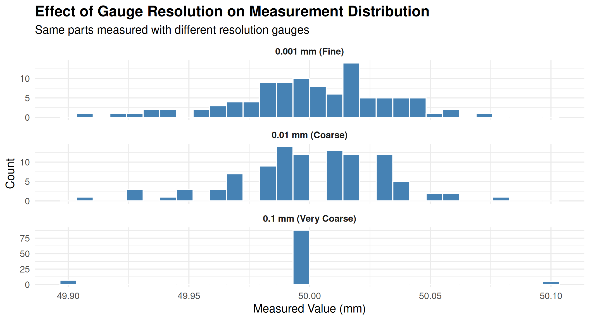
11.8 Common Sources of Measurement Error
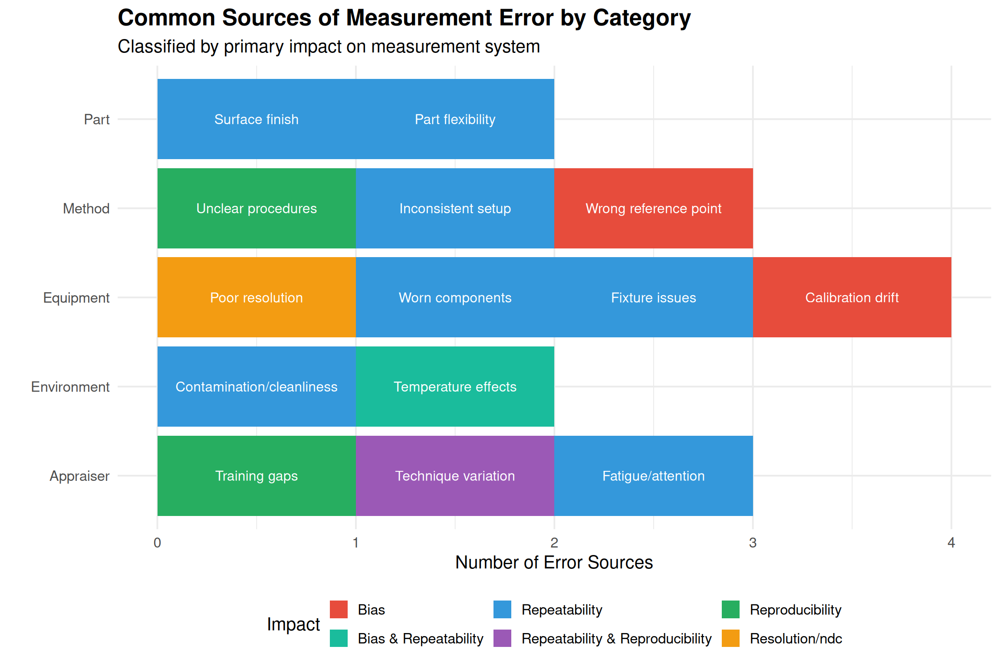
| Issue Identified | Likely Causes | Improvement Actions |
|---|---|---|
| High Repeatability (EV) | Gauge condition, fixture, resolution, part variation during measurement | Maintain gauge, improve fixture, upgrade resolution, reduce part handling |
| High Reproducibility (AV) | Training, technique, procedure clarity | Standardize technique, retrain, improve written procedures |
| Significant Bias | Calibration, master accuracy, technique | Recalibrate, verify master, standardize technique |
| Poor Linearity | Gauge mechanism, calibration across range | Repair/replace gauge, multi-point calibration |
| Drift/Stability Issues | Environmental effects, gauge wear, master deterioration | Environmental control, maintenance, replace masters |
| Low ndc | Resolution, excessive gauge variation relative to part variation | Higher resolution gauge, reduce gauge variation |
11.9 MSA and SPC Relationship
Poor measurement systems directly impact SPC effectiveness.
11.9.1 Effect on Control Charts
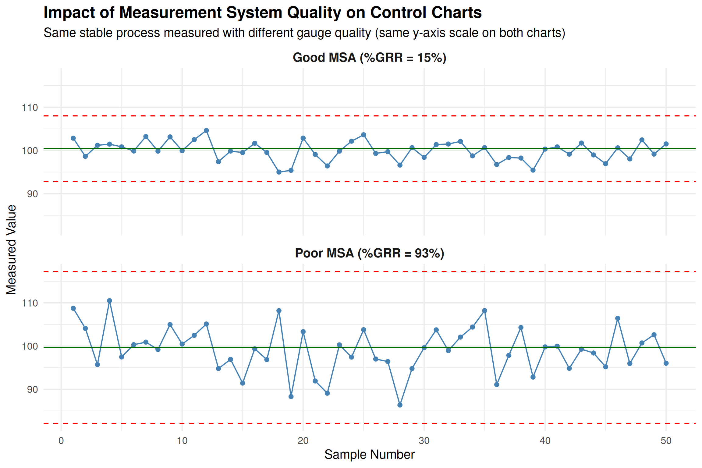
11.9.2 Effect on Capability Studies
Live cell — try different tolerance/sigma values or GRR percentages.
11.10 Conducting an MSA Study: Step-by-Step
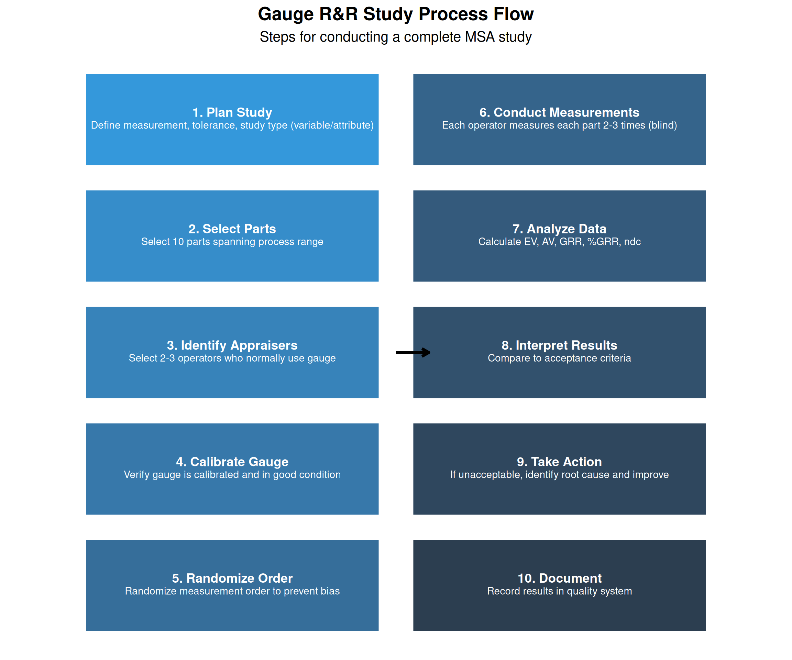
11.10.1 Data Collection Sheet Template
| Part | Operator | Trial | Measurement |
|---|---|---|---|
| 1 | A | 1 | ___ |
| 1 | A | 2 | ___ |
| 1 | B | 1 | ___ |
| 1 | B | 2 | ___ |
| 1 | C | 1 | ___ |
| 1 | C | 2 | ___ |
| 2 | A | 1 | ___ |
| 2 | A | 2 | ___ |
| 2 | B | 1 | ___ |
| 2 | B | 2 | ___ |
| 2 | C | 1 | ___ |
| 2 | C | 2 | ___ |
11.11 Video Resources
11.11.1 Understanding Gauge R&R
11.11.2 MSA in Practice
11.12 Summary
Measurement Systems Analysis ensures that your data can be trusted for process control and decision-making:
- Before SPC, do MSA - Garbage in, garbage out; verify measurement quality first
- Accuracy components - Bias, linearity, and stability affect location (average)
- Precision components - Repeatability (within operator) and reproducibility (between operators)
- Key metrics - %GRR < 30% and ndc ≥ 5 for acceptable systems
- Resolution matters - 10:1 ratio vs. tolerance or process variation
- Attribute MSA - Use Kappa for pass/fail decisions
- Continuous improvement - Regular verification and recertification
“The measurement system is part of the process. Fix the measurement system before trying to fix the process.”
11.13 Review Questions
Question 1: A gauge R&R study yields %GRR = 45% and ndc = 2. What does this mean and what should be done?
Answer:
This measurement system is unacceptable:
- %GRR = 45% exceeds the 30% maximum threshold, meaning 45% of the observed variation is due to the measurement system, not the parts
- ndc = 2 indicates the gauge can only distinguish between 2 categories of parts, which is insufficient for process control (minimum 5 required)
Actions required: 1. Investigate root causes of high variation: - Check gauge calibration and condition - Evaluate operator technique and training - Review measurement procedure for ambiguity - Assess fixture and part positioning - Check gauge resolution adequacy
Prioritize improvement efforts:
- If repeatability (EV) is high: Focus on gauge condition, fixture, technique consistency
- If reproducibility (AV) is high: Focus on training, procedure clarity, technique standardization
Re-run study after improvements
If improvements insufficient, consider upgrading to a higher-capability gauge
Until resolved, this gauge should not be used for process control or capability studies
Question 2: What is the difference between repeatability and reproducibility? Give an example of each source of error.
Answer:
Repeatability (Equipment Variation - EV): - Variation when the same operator measures the same part multiple times with the same gauge - Also called “within-operator” variation - Represents the inherent precision of the gauge and measurement technique
Examples of repeatability errors: - Gauge resolution limitations - Gauge mechanism play/backlash - Inconsistent part positioning in fixture - Variations in technique even by same operator - Environmental micro-changes during measurement
Reproducibility (Appraiser Variation - AV): - Variation when different operators measure the same parts - Also called “between-operator” variation - Represents differences in how operators apply the measurement method
Examples of reproducibility errors: - Different technique between operators (pressure applied, angle, etc.) - Different interpretation of measurement procedure - Different reading of analog scales - Training differences - Physical differences (eyesight, hand steadiness)Question 3: Calculate the bias and determine if it is acceptable. Reference value = 25.000 mm, Tolerance = ±0.050 mm, Measured values: 25.012, 25.015, 25.008, 25.011, 25.014, 25.009, 25.013, 25.010, 25.012, 25.011
Answer:
Live cell — check your own version by changing the numbers.
The bias of 0.0115 mm (11.5% of tolerance) is marginally acceptable and statistically significant. Recalibration should be considered.Question 4: Why is it important to conduct MSA before capability studies (Cp, Cpk)?
Answer:
MSA must precede capability studies because measurement error directly inflates observed variation:
Mathematical Relationship: \[\sigma^2_{observed} = \sigma^2_{process} + \sigma^2_{measurement}\]
Impacts on Capability:
Understated Cp/Cpk: Observed sigma is always larger than true process sigma, so calculated capability will be lower than actual capability
False Alarms: A capable process may appear incapable due to measurement noise, leading to unnecessary process adjustments or investment
Missed Issues: High measurement variation masks actual process variation; you can’t see problems through the “fog” of gauge error
Bad Decisions: Incorrect capability data leads to:
- Wrong process acceptance decisions
- Inappropriate control limits
- Misguided improvement investments
- Customer quality issues
Example: - True process: Cpk = 1.5 (very capable) - With 50% GRR: Observed Cpk ≈ 0.9 (appears incapable) - Result: Unnecessary process “improvement” efforts
Rule of Thumb: If %GRR > 30%, any capability study is essentially meaningless because too much of the observed variation is measurement noise, not real process variation.Question 5: A visual inspection has the following results: Kappa vs. reference = 0.72, within-operator agreement = 88%, between-operator agreement = 75%. Evaluate this attribute measurement system.
Answer:
Results Interpretation:
- Kappa vs. Reference = 0.72
- Falls in “Substantial agreement” range (0.61-0.80)
- Operators are correctly classifying parts most of the time
- Acceptable for many applications, but improvement possible
- Within-Operator Agreement = 88%
- Operators are fairly consistent with themselves
- 12% of the time, same operator gives different result on same part
- Should target >90% for critical inspections
- Between-Operator Agreement = 75%
- Operators disagree on 25% of parts
- This is a significant reproducibility issue
- Major source of inconsistency in product quality
Assessment: MARGINAL - Improvement Needed
Recommended Actions:
Standardize criteria: Create clear visual standards with boundary samples
- Photos of accept/reject borderline cases
- Written descriptions of defect criteria
Training:
- Calibration session with all operators and reference samples
- Identify operators with lower agreement for targeted training
Improve conditions:
- Check lighting adequacy and consistency
- Ensure proper viewing distance and angle
- Reduce fatigue with appropriate break schedules
Consider automation: For critical inspections, automated vision systems may provide better consistency
Re-study after improvements to verify effectiveness
Question 6: What is the “Rule of Ten” for gauge resolution, and how would you apply it?
Answer:
The Rule of Ten: The gauge resolution should be at least 1/10 of the tolerance or 1/10 of the process variation (6σ), whichever is smaller.
\[\text{Resolution} \leq \frac{\min(\text{Tolerance}, 6\sigma)}{10}\]
Application Example:
Given: - Part tolerance: ±0.05 mm (total = 0.10 mm) - Process 6σ: 0.08 mm - Available gauges: 0.01 mm resolution, 0.001 mm resolution
Calculation:
Required resolution ≤ min(0.10, 0.08) / 10
Required resolution ≤ 0.08 / 10
Required resolution ≤ 0.008 mmAssessment: - 0.01 mm gauge: 0.01 > 0.008 → INADEQUATE - 0.001 mm gauge: 0.001 < 0.008 → ADEQUATE
Why It Matters: 1. If resolution is too coarse, gauge cannot detect small part differences 2. Results in low ndc (number of distinct categories) 3. Control charts will show “stair-step” patterns 4. Capability studies will be inaccurate
Practical Tips: - For SPC applications, 10:1 is minimum; 20:1 is preferred - For capability studies, 10:1 is acceptable - For simple pass/fail gauging, 5:1 may be acceptableQuestion 7: Given the following ANOVA table from a Gauge R&R study, calculate the variance components and %GRR.
| Source | DF | SS | MS |
|---|---|---|---|
| Part | 9 | 0.2850 | 0.03167 |
| Operator | 2 | 0.0025 | 0.00125 |
| Part×Operator | 18 | 0.0090 | 0.00050 |
| Repeatability | 60 | 0.0180 | 0.00030 |
| Total | 89 | 0.3145 |
Study design: 10 parts, 3 operators, 3 trials
Answer:
Live cell — check your own version by changing the ANOVA table values.
Question 8: What actions would you take if a Gauge R&R study showed high repeatability (EV) but low reproducibility (AV)?
Answer:
When repeatability is high (main contributor to GRR) but reproducibility is low, the measurement variation is coming from the gauge/equipment/technique rather than differences between operators.
Root Cause Investigation - Focus Areas:
- Gauge Condition
- Worn measuring surfaces or contacts
- Loose components or mechanism play
- Damaged or dirty probe/sensor
- Gauge Resolution
- Resolution may be inadequate for the tolerance
- Check 10:1 rule compliance
- Fixture/Fixturing
- Part not held consistently
- Fixture wear or damage
- Part not seating properly
- Measurement Technique
- Inconsistent contact force
- Varying measurement location on part
- Speed of measurement varies
- Part Characteristics
- Part surface finish affecting readings
- Part flexibility/deflection during measurement
- Part temperature variation
- Environment
- Vibration affecting readings
- Temperature instability
- Contamination
Improvement Actions:
| Priority | Action |
|---|---|
| 1 | Verify gauge calibration and condition; repair/replace if needed |
| 2 | Check and improve fixture; ensure consistent part positioning |
| 3 | Evaluate and potentially upgrade gauge resolution |
| 4 | Standardize technique (force, speed, location) |
| 5 | Control environmental factors |
| 6 | Re-run study to verify improvement |
11.14 References
AIAG. (2010). Measurement Systems Analysis Reference Manual (4th ed.). Automotive Industry Action Group.
Wheeler, D.J. (2006). EMP III: Evaluating the Measurement Process (3rd ed.). SPC Press.
Montgomery, D.C. (2019). Introduction to Statistical Quality Control (8th ed.). Wiley.
Burdick, R.K., Borror, C.M., & Montgomery, D.C. (2005). Design and Analysis of Gauge R&R Studies. SIAM.
ASTM E2782-17. Standard Guide for Measurement Systems Analysis.
ISO 22514-7:2021. Statistical Methods in Process Management - Capability and Performance - Part 7: Capability of Measurement Processes.
Wheeler, D.J., & Lyday, R.W. (1989). Evaluating the Measurement Process (2nd ed.). SPC Press.
Minitab. (2021). Gage R&R Study (Crossed). Minitab Support Documentation.
JCGM 100:2008. Evaluation of Measurement Data - Guide to the Expression of Uncertainty in Measurement (GUM).
Dietrich, E., & Schulze, A. (2011). Statistical Procedures for Machine and Process Qualification (6th ed.). Hanser.